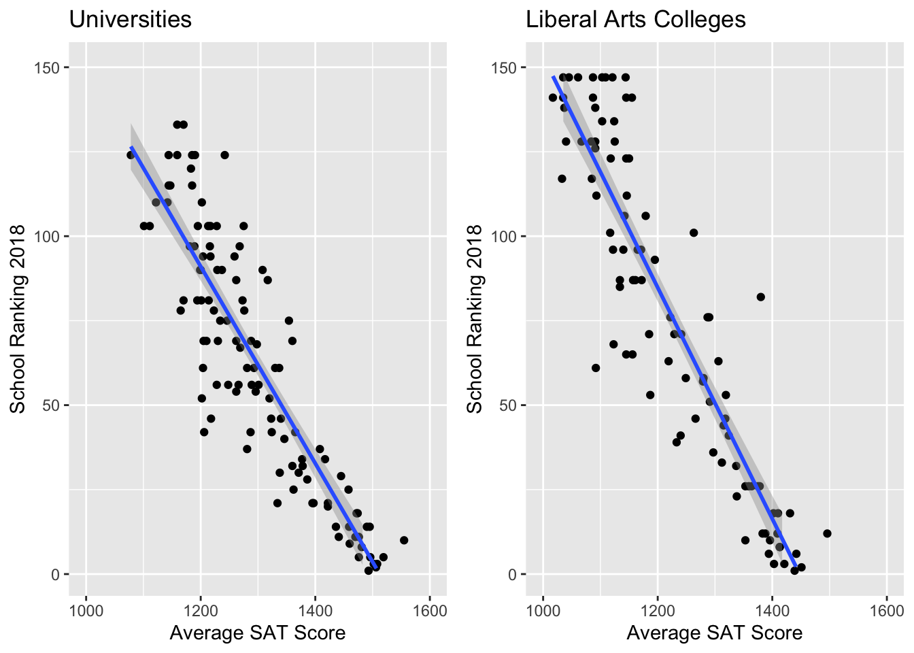
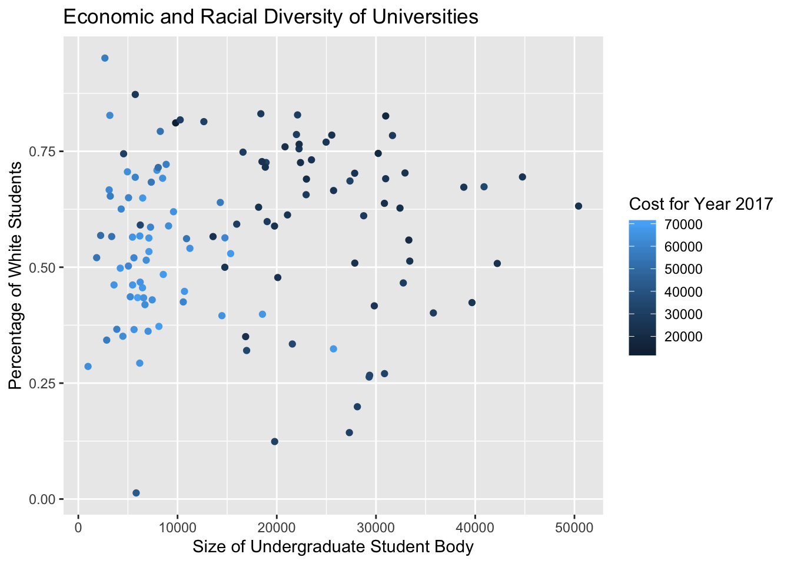

Chapter 5 Visualizations
Intuitively, what’s going on?
5.1 1st & 2nd Peeks
In our first and second peeks, we are interested in geographical locations of universities and colleges. It might be surprising to learn that students, when choosing schools, give quite a bit of weight to a school’s geographical location. We investigate two variables that contribute to prospective students’ choices, giving side-by-side plots that reflect how the variables vary between universities and liberal arts colleges.
Variable Collapses
We collapsed and renamed the “REGION” variable based on the College Scorecard Data Dictionary. Excluded are “0” which represents the US Service Schools and “9” which represents the Outlying Areas, since none of the schools on our list fall in either category. We also ensured that the REGION variable was being treated as a character instead of an integer.
REGION_collapse <- fct_collapse(as.character(full_LiberalArts$REGION), NewEngland = "1", MidEast = "2", GreatLakes = "3", Plains = "4", Southeast = "5", Southwest = "6", RockyMountains = "7", FarWest = "8")
full_LiberalArts$REGION_collapse <- REGION_collapseWe did a similar process for the LOCALE variable. We collapsed and renamed the variable based on the College Scorecard Data Dictionary. We first collapsed LOCALE into the more general setting groups a user would recognize (city, town, suburb, and rural). We also preserved the original designations in order to look at distributions within the larger categories.
LOCALE_collapse_lac1 <- fct_collapse(full_LiberalArts$LOCALE, City = c("11","12","13"), Suburb = c("21","22","23"), Town = c("31","32","33"), Rural = c("41","42","43"))
LOCALE_collapse_lac2 <- fct_collapse(full_LiberalArts$LOCALE, LargeCity = "11", MidsizeCity = "12", SmallCity = "13", LargeSuburb = "21", MidsizeSuburb = "22", SmallSuburb = "23", FringeTown = "31", DistantTown = "32", RemoteTown = "33", FringeRural = "41", DistantRural = "42", RemoteTown = "43")
full_LiberalArts$LOCALE_collapse_lac1 <- LOCALE_collapse_lac1
full_LiberalArts$LOCALE_collapse_lac2 <- LOCALE_collapse_lac2The process described above was repeated on the University dataset.
REGION_collapse <- fct_collapse(as.character(fullUniversity$REGION), NewEngland = "1", MidEast = "2", GreatLakes = "3", Plains = "4", Southeast = "5", Southwest = "6", RockyMountains = "7", FarWest = "8")
fullUniversity$REGION_collapse <- REGION_collapseLOCALE_collapse <- fct_collapse(fullUniversity$LOCALE, City = c("11","12","13"), Suburb = c("21","22","23"), Town = c("31","32","33"), Rural = c("41","42","43"))
LOCALE_collapse2 <- fct_collapse(fullUniversity$LOCALE, LargeCity = "11", MidsizeCity = "12", SmallCity = "13", LargeSuburb = "21", MidsizeSuburb = "22", SmallSuburb = "23", FringeTown = "31", DistantTown = "32", RemoteTown = "33", FringeRural = "41", DistantRural = "42", RemoteTown = "43")
fullUniversity$LOCALE_collapse <- LOCALE_collapse
fullUniversity$LOCALE_collapse2 <- LOCALE_collapse25.1.1 Visualization 1: Region & Setting
Aside from the fact that liberal arts colleges tend to have a little more variation in their setting (LOCALE) breakdown with the extra “rural” designation, we find that for universities, in all regions, a majority of the schools are in “city” locations. The largest proportion of schools are in the MidEast, then the Southeast, and then the Great Lakes region. For liberal arts colleges, there is a more even split regionally, with the MidEast and Southeast still having the most, but the GreatLakes, NewEngland, Plan, and FarWest not far behind. There are a lot of city schools (about half) in the Southeast, but otherwise, there seems to be either even splits or more schools that are in towns and suburbs.
5.1.2 Visualization 2: General Locale & Breakdown

This next plot is looking at the distribution among and within the locale categories. We see again that a majority (almost 4 times) as many universities are in a cities as there are in suburbs and very few universities are located in towns. Of the cities, about half are in large cities, with about a quarter each in midsize and small cities. Of the suburbs, most are in large suburbs. As we saw before, liberal arts colleges are a little more geographically diverse, with roughly the same proportion of schools divides among the city, suburb, and town designations. Unlike universities, most liberal arts colleges located in cities are in smaller cities, large suburbs, and distant towns.
5.2 3rd Peek
“In a utilitarian age, of all other times, it is a matter of grave importance that fairy tales should be respected.” -Charles Dickens
Here’s when people tend to (have the excuse to) get a little more utilitarian. Studies find that people pay more attention to ranking when ranking data is available. We (or more precisely, Zuofu) are just like that.
SAT is usually one of the major indicators of students’ fitness with certain colleges, both from students’ and colleges’ perspective. We do a bi-variate visualization between average SAT score of 2016-2017 academic year and university ranking of Year 2018. If you look further in our project (which hopefully you do!), you will see this is the basis of our first introductory model.

In this plot, we investigate the correlation between standardized test scores (SAT) and college ranking. From the literature and past knowledge, we believe that test scores are one of the factors that can be a marker of quality for ranking compilers. In this case, we do see a generally negative correlation between average SAT score and ranking. As SAT scores go up, rankings get smaller (better). The university scores are a bit more clustered, while there is a larger spread between the liberal arts college scores. This might be an indication of the weight put on standardized test scores for larger universities and the more holistic approach liberal arts colleges have.
5.3 4th Peek
“Diversity: the art of thinking independently together.” -Malcolm Forbes
In an effort to create a more just and inclusive world, the opportunity to engage with people of different backgrounds and identities plays an increasingly important role. We plan to look into the common trend between the size of the student body and diversity factors (namely, the percentage of white students and the cost of attending college).
fullUniversity$UGDS_WHITE_1617_categ = cut(fullUniversity$UGDS_WHITE_1617, c(0,0.2,0.4,0.6,0.8,1))
We didn’t see an observable relationship between cost and the percentage of white students; we did observe that universities of a smaller size tend to correlate with a much larger cost.
full_LiberalArts$UGDS_WHITE_1617_categ = cut(full_LiberalArts$UGDS_WHITE_1617, c(0,0.2,0.4,0.6,0.8,1))In terms of liberal arts colleges, we can see that the data points (schools) are more clustered at the top section of the plot. This makes sense to us given that most liberal arts colleges are private compared to universities. We didn’t see an observable relationship between cost and the percentage of white students.